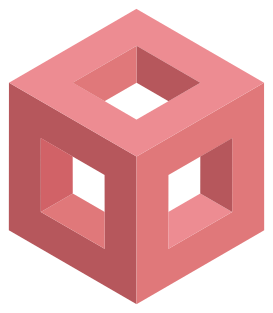

Proposta de programa
O problema
Por que agora
do público ainda sem acesso
Número de exemplo. Citar a fonte antes de publicar.
A solução
Como funciona
Etapa um
Uma linha curta
Etapa dois
Etapa três
Etapa quatro
Na prática
Um parágrafo curto que descreve a experiência de quem participa.
Metas de exemplo
Modelo
Equipe
Nome SobrenomeFunção
Decisão até 00/00
Nome e contato de quem responde (exemplo)